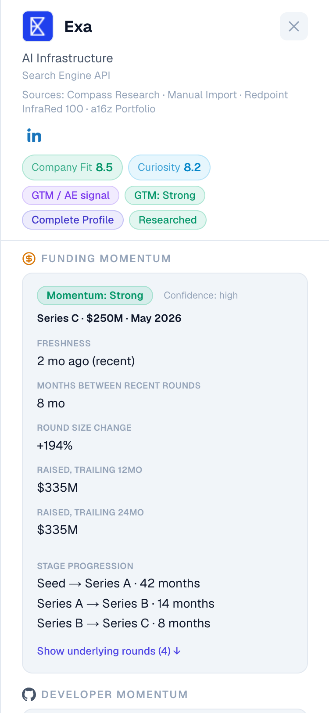
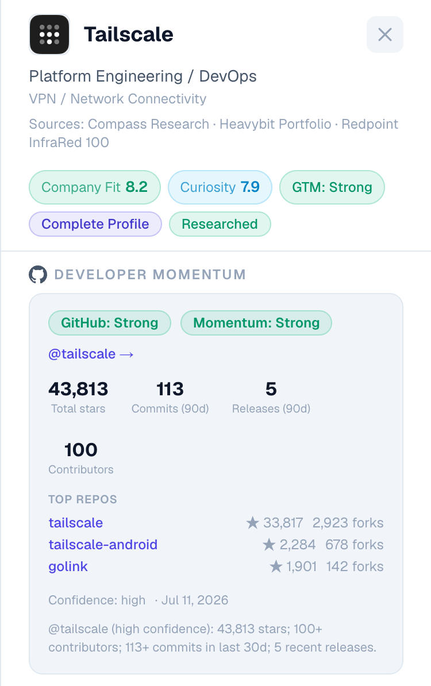

How Compass works
Compass turns curated company sources into structured company intelligence, then personalizes that intelligence against a search profile to produce a prioritized target list.

How I turned a messy company list into an evidence-backed system for deciding where to invest the next chapter of my career.
Explore the Compass demo →LinkedIn, Crunchbase, recruiter outreach, VC portfolio lists, and spreadsheets each solve different parts of a job search. None solved the part I actually got stuck on: deciding which startups were worth pursuing in the first place.
I joined Confluent's early team in San Francisco, then moved to Sydney to help grow its APAC business. After several years in technical infrastructure sales there and two years selling enterprise software testing platforms at Tricentis, I knew I wanted to return to the startup world, ideally at a company solving a foundational technical problem.
It started with a Python script and a Google Sheet. The script helped me find companies, but the result quickly became another messy list: inconsistent information, no useful order, and no practical way to know where to focus.
Meanwhile, recruiters kept pitching companies that had little connection to what I wanted.
Finding open positions was not the hard part. The hard part was identifying which companies fit my career thesis: startups solving foundational, technically interesting problems, generally around Series A through C, with strong funding, hiring, and product momentum.
I had no consistent way to discover those companies, evaluate them, or track what was changing.
Compass turns curated company sources into structured company intelligence, then personalizes that intelligence against a search profile to produce a prioritized target list.
That Python script and Google Sheet became the starting point for Compass. I moved the list into a database and began building a system that could research, evaluate, and prioritize the companies inside it.
Compass starts from curated company sources: VC portfolio lists and other industry lists I trust, spanning categories like AI infrastructure, data infrastructure, and developer tools. Each company is normalized into a shared registry that every research pipeline draws from, rather than living in scattered spreadsheets. One source is scanned automatically, with changes diffed against the registry so new or updated companies are never missed.

Compass does not turn that evidence into signals with a single, general-purpose research prompt. I built a separate module for each question I cared about, with its own sources, logic, and guardrails.
Research Modules
The funding module combines Exa's open-web retrieval with OpenAI's evidence structuring. It turns current public information about funding rounds and investors into fields such as stage, latest round, amount raised, total reported funding, date, lead investor, and source.
It prioritizes company announcements, investor posts, press releases, and reputable reporting. When the available evidence is insufficient, Compass leaves the field blank rather than filling the gap with an assumption.
The module also guards against common errors, such as confusing valuation with capital raised or presenting a cumulative funding total that no source explicitly reported.

This gives me the funding context I care about without relying on a paid company database as the system of record, while keeping the underlying evidence visible.
Exa helped Compass find conceptually relevant material without relying entirely on exact keyword matches. But retrieval was only the beginning.
A source can be relevant to a research question without supporting every claim drawn from it. That failure mode pushed me to add confidence signals and evidence-sufficiency checks between what Compass retrieves and what it presents as fact.
Building with Exa gave me a practical understanding of both the value of semantic retrieval and the product work required after the results come back: distinguishing well-supported conclusions from tentative signals and questions that still require human review.
Hiring activity is one of the most useful signals for understanding a company's timing, but tracking it consistently across hundreds of companies is impractical.
Instead of checking career pages individually, Compass collects and normalizes openings from applicant-tracking systems including Greenhouse, Lever, and Ashby, then associates each posting with the correct company.
It preserves direct links to the original ATS postings and classifies relevant openings into Core GTM, Technical GTM, and GTM Adjacent roles. This helps answer the questions I actually care about: Is the company hiring? Is it building a go-to-market organization? Which functions are expanding? Does the pattern suggest an enterprise sales motion, support expansion, or an early go-to-market buildout?
This turns scattered job postings into company-level evidence that can inform timing and prioritization without hiding the individual roles behind an unexplained score.

For developer-focused companies, Compass looks beyond the claims on a company's website for visible signs of public technical traction.
Using the GitHub API, it attempts to match each company with its public organization, then examines repository activity, contributors, releases, stars, and recency.
The module weighs historical popularity against current activity. A smaller but fast-moving project can still surface as a strong signal, while a widely starred but dormant project is scored more cautiously.
Because matching the wrong GitHub organization would make every subsequent metric meaningless, uncertain matches are flagged for review rather than scored automatically.
Developer Momentum also reflects a broader design principle: I deliberately did not use AI for every part of Compass. Exa handles open-web retrieval, OpenAI helps structure and synthesize unstructured evidence, and direct APIs or deterministic code handle tasks where precision matters more than interpretation.
The goal was not to maximize the amount of AI in the system, but to use the right method for each research problem.

No single signal determines whether a company is worth pursuing. Funding can indicate timing, hiring can reveal how the organization is developing, and public developer activity can provide evidence of technical traction.
Radar brings those signals together with my search preferences to produce a ranked, inspectable view of the companies that best fit my career thesis.

Radar produces a match score, but it does not ask me to trust that number in isolation. The underlying evidence remains visible, so I can see which companies fit that thesis, why they rank where they do, and where important information is still missing. Opening a company brings its facts, funding, hiring, developer activity, and timeline into one view.

Compass separates the product experience from the research and data pipelines behind it. A Next.js and React interface provides the application layer, while a Python backend handles research, enrichment, and scoring. Supabase serves as the shared system of record.
The core stack includes:
Compass changed my job search from a reactive process into a deliberate one.
Instead of starting with whichever recruiter or job posting happened to appear that week, I could start with my career thesis, identify the companies supported by the strongest evidence, and investigate roles from there.
It also surfaced gaps in my own assumptions. Some companies I initially found compelling became less convincing under closer inspection, while less familiar companies rose because their evidence, timing, and technical momentum were stronger.
Compass now maintains a registry of roughly 680 companies and turns that universe into a smaller, evidence-backed set of Best Matches.
What began as a messy spreadsheet is now a working system for researching companies, comparing them consistently, and revisiting them as new evidence appears.
Compass does not predict where I will work next. It gives me a disciplined way to decide where to invest my time and attention.